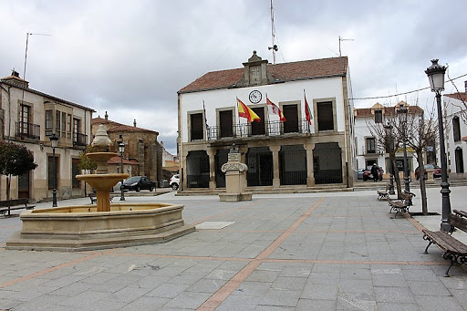

Bermillo de Sayago es un municipio y localidad española de la provincia de Zamora y de la comunidad autónoma de Castilla y León.
En el municipio habitan 1057 personas, mientras que la localidad con el mismo nombre tiene una población de 487 habitantes. Ocupa el centro geográfico de la comarca de Sayago, siendo además su centro neurálgico de comunicaciones por carretera. Hasta hace unos años y desde 1834, fue la cabeza del partido judicial de Sayago.
Enlace directo a la página del ayuntamiento de Bermillo de Sayago

Localización: Bermillo de Sayago se encuentra situado en el suroeste de la provincia de Zamora, a 34 km de la ciudad de Zamora —la capital provincial—, 18 km de la frontera con Portugal y 18 km de la provincia de Salamanca. Bermillo es el núcleo urbano principal del municipio. Junto a esta localidad, e integradas en su municipio, se encuentran las localidades de Fadón, Fresnadillo, Gáname, Piñuel, Torrefrades, Villamor de Cadozos y Villamor de la Ladre. El municipio linda con los términos municipales de Muga de Sayago, Luelmo, Moral de Sayago, Villar del Buey, Pereruela, Salce, Almeida de Sayago y Fresno de Sayago.
Geografía:
Historia: El actual pueblo de Bermillo está situado entre los despoblados de El Villar y Santiago, siendo posible que su actual emplazamiento formara parte de alguna de las dos citadas poblaciones. Existe abundante documentación recogida por expertos que relaciona las dehesas y poblaciones colindantes con la aparición y constitución a través del tiempo de lo que es hoy Bermillo de Sayago. En la Edad Media, Bermillo quedó integrado en el Reino de León, época en que habría sido repoblado por sus monarcas en el contexto de las repoblaciones llevadas a cabo en Sayago. Así, los primeros documentos escritos que mencionan la existencia de Bermillo, datan del siglo XII. Así, ha sido documentado como Melmelo en 1183, Mermiello en 1256, Mermyllo entre los siglos XV y XVI, Mermillo en los siglos XVI y XVII, Vermillo en el siglo XVIII y Bermillo a partir del XVIII. Ya en el siglo XIV, en el año 1313, Bermillo, como cabeza de Sayago, fue una de las villas que formó la Hermandad de concejos del Reino de León. Posteriormente, en la Edad Moderna, Bermillo estuvo integrado en el partido de Sayago de la provincia de Zamora, del que era cabecera, tal y como reflejaba en 1773 Tomás López en Mapa de la Provincia de Zamora. Así, al reestructurarse las provincias y crearse las actuales en 1833, la localidad se mantuvo en la provincia zamorana, dentro de la Región Leonesa, encabezando desde 1834 el partido judicial de Bermillo de Sayago, hecho que se prolongó hasta 1983, cuando fue suprimido el mismo e integrado en el Partido Judicial de Zamora. Esta localidad es eminentemente agrícola y ganadera, pero en el primer cuarto del siglo XIX reconvirtió una parte de sus edificios más céntricos, adaptándolos a los fines comerciales y de servicios de la época. De esta forma, surgieron casas de sillería y construcción regular de dos plantas, la inferior destinada a local comercial y la superior a vivienda, que destacan por su notable diferencia con el tipo estándar de vivienda tradicional de la localidad y de la comarca en general. En 1993 se rodó la película Sombras en una batalla dirigida por Mario Camus y con la participación de Carmen Maura. La película fue rodada principalmente en las localidades de Bermillo y Gáname. En la noche del 9 de enero de 2010 una furgoneta con explosivos de la banda terrorista ETA fue interceptada cerca del centro de la localidad de Bermillo Los terroristas, que se dirigían hacia Portugal, fueron detectados en un control rutinario de la Guardia Civil. Mientras los agentes inspeccionaban el interior de la furgoneta robaron el coche patrulla. Fueron detenidos ya en territorio portugués. La localidad de Bermillo de Sayago fue final de la décima etapa en la Vuelta Ciclista a España en septiembre de 2018, siendo la primera vez en la historia que una etapa de la vuelta finalizó en la comarca de Sayago.
Cultura: Como sedes culturales, Bermillo de Sayago dispone de la casa de la cultura "Jesús Santiago" y de su biblioteca municipal.
Naturaleza: Una de sus principales muestras de naturaleza es su charca de la Vega.
Tradiciones: Su principal tradición es la romería que se celebra el primer sábado de mayo y es llamada la «Romería de San Juan de los Huevos».